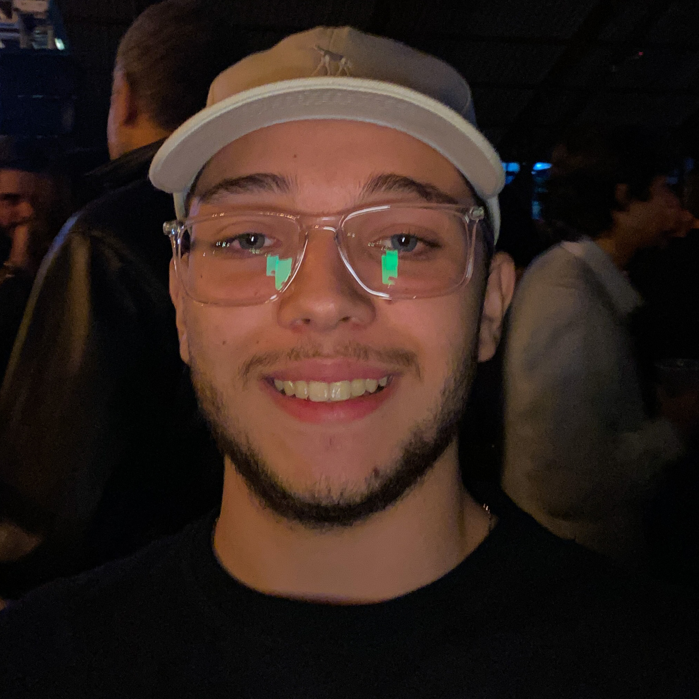

Estudante de Sistemas de Informação apaixonado por tecnologia, em busca de conhecimento e soluções criativas. Comprometido em aplicar habilidades de programação para resolver problemas do mundo real.
Olá, eu sou o Caio
Estudante de Sistemas de Informação apaixonado por tecnologia, em busca de conhecimento e soluções criativas. Comprometido em aplicar habilidades de programação para resolver problemas do mundo real.